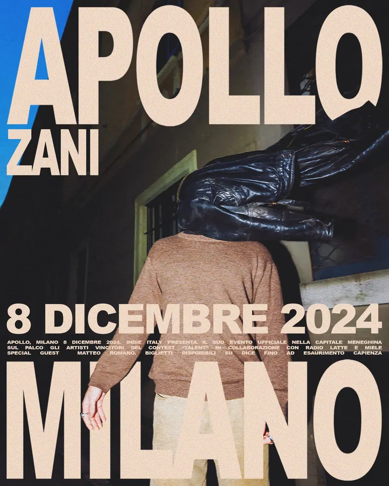
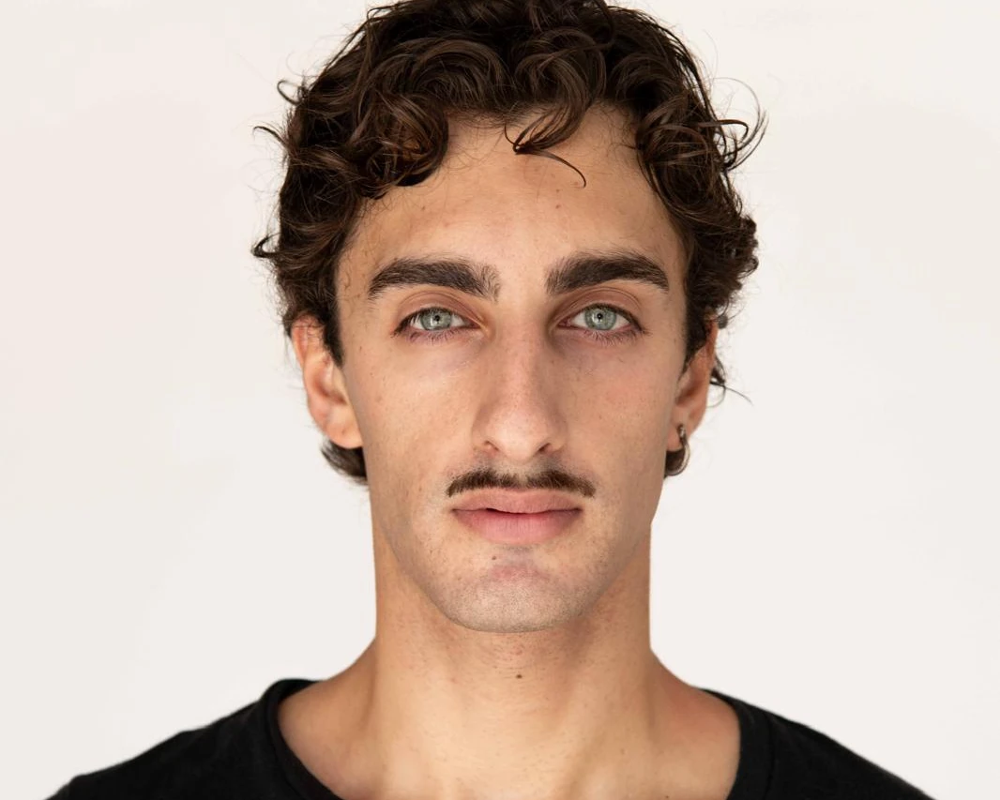
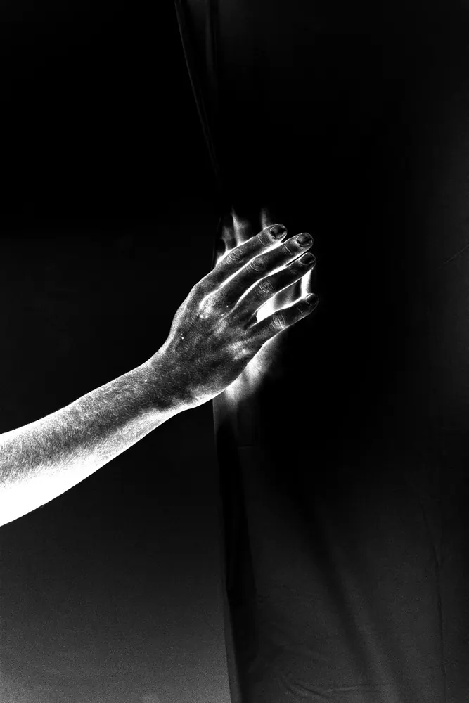
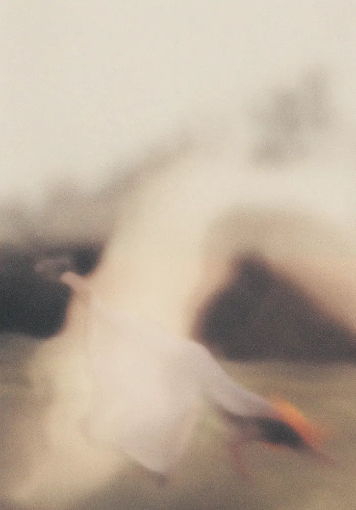
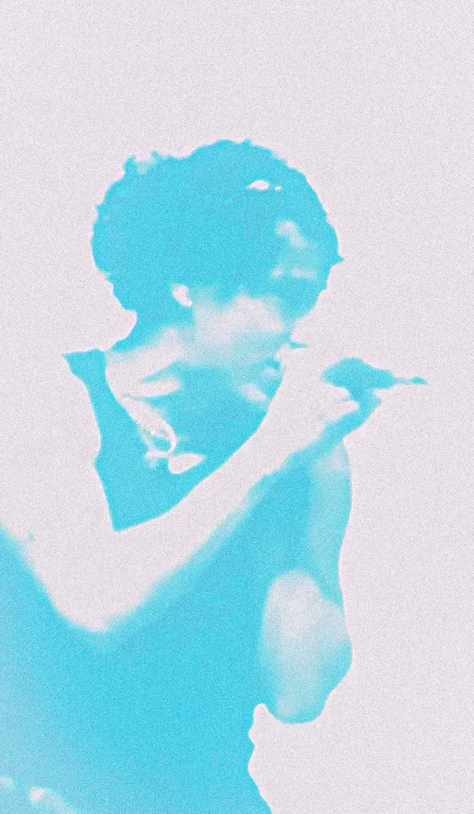
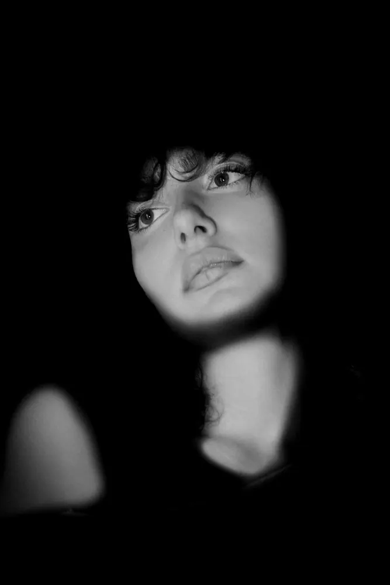
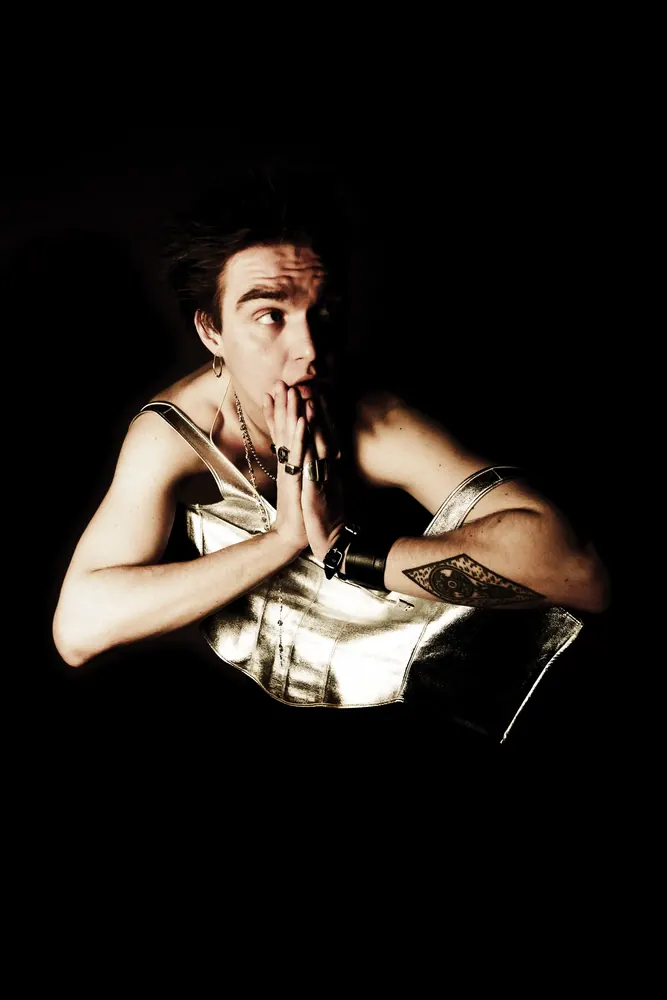
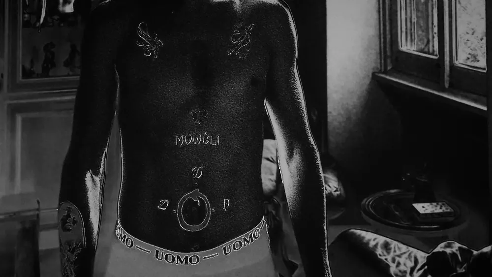
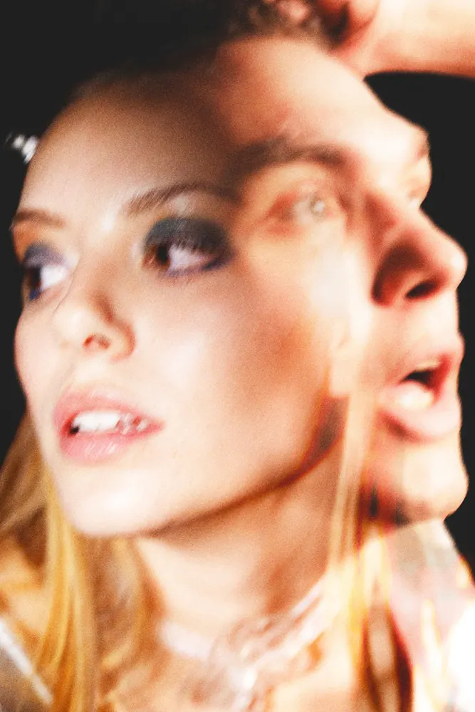

01 Graphic design
Identities, campaigns and print that hold up at every size.

Marco S. Zanini
A degree in Product Design from NABA, then a gradual move from industrial design to visual arts: communication, creative direction, graphic design.
A year as graphic designer for FNM and Buccellati, then freelance: identities and visual communication for festivals, music and theatre, fashion editorials, and a second year as assistant director alongside Andrea Vailati, founder of ArteSettima.
Selected credits

01 Graphic design
Identities, campaigns and print that hold up at every size.

02 Direction
Music, editorials and fashion film, from the idea to the final cut.

03 Assistant director
Assistant director on short films and documentaries: the plan that gets the shot.

04 Photography
Portraits, editorials and live music, shot and post-produced.
Before the idea,
the eye.
Every brief starts by looking: at the brand, the story, the people in the room and what is already there.

One direction.
Argued, not guessed.
Fewer options, better reasons. You get one way forward and why it is the right one.

From the page
to the set.
On paper, behind the camera, on set: I stay until it is finished, not just delivered.

